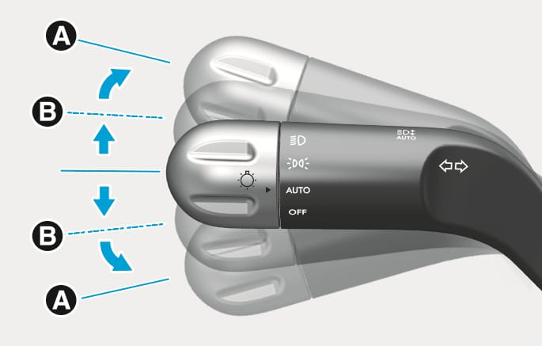

방향지시등 사용하기

2C_TurnSignalSwitch
차선을 변경하거나 회전하기 전, 차량의 이동 방향을 주변 차량의 운전자에게 알리십시오.
-
우측 방향지시등을 켜려면 스위치를 위쪽으로 끝까지(A) 미십시오.
-
좌측 방향지시등을 켜려면 스위치를 아래로 끝까지(A) 미십시오.
-
방향지시등이 켜지면 클러스터에 해당 방향의 방향지시(
` ) 표시등이 켜집니다.
-
방향 전환이나 회전을 마치면 방향지시등이 자동으로 꺼집니다. 자동으로 꺼지지 않는 경우 직접 스위치를 중앙으로 밀어 방향지시등을 끄십시오.
-
스위치를 살짝 위, 아래로 움직이면(B) 방향지시등이 켜지지만 스위치가 고정되지는 않으므로, 스위치에서 손을 떼면 방향지시등이 꺼집니다.
원터치 방향지시등 사용하기
조명 스위치를 살짝 움직이면(B) 사용자가 미리 설정한 횟수만큼 방향지시등이 깜빡인 후 꺼집니다(3회/5회/7회).
-
스위치는 고정되지 않고 중앙 위치로 돌아갑니다.
-
인포테인먼트 시스템에서 설정 > 차량 > 라이트 > 원터치 방향지시등을 누른 후 방향지시등 작동 횟수를 선택할 수 있습니다.
-
업데이트로 인해 인포테인먼트 시스템의 상세 설정이 변경될 수 있습니다. 자세한 설정 방법은 인포테인먼트 시스템 웹 매뉴얼을 참고하십시오.
-
방향지시등 전구의 전선이 끊어졌거나 접촉이 불안정한 경우 방향지시등이 비정상적으로 빠르게 깜빡일 수 있습니다.